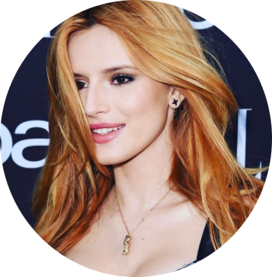

.png)
Белла Торн
Белла Торн родилась во Флориде. Она младший ребёнок в семье Рея и Тамары Торн. У неё две старшие сестры — Дани и Кайли — и старший брат Реми, которые также являются актёрами. Будучи шестинедельной малышкой, Белла снялась для каталога «Parents Magazine», с чего и началась её карьера модели. Спустя несколько лет Белла начала сниматься в фильмах и сериалах. Впервые Торн появилась на экране в 2003 году, исполнив незначительную роль в фильме «Застрял в тебе». Она снялась в эпизоде «I Wanna Be Sedated» телесериала «Красавцы», в эпизоде сериала «Одинокие сердца» в роли юной Тейлор Таунсенд, появилась во втором сезоне телесериала «Грязные мокрые деньги», играя во второстепенном составе и в эпизоде телесериала «Дорога в осень». В 2010 году получила главную роль в телесериале «Танцевальная лихорадка»
Патрик Шварценеггер
Патрик Шварценеггер — американский актёр, фотомодель и предприниматель, сын Арнольда Шварценеггера и Марии Шрайвер. Патрик Шварценеггер начал свою актёрскую карьеру с небольшой роли в фильме «Запасные игроки» в 2006 году. Поворотным моментом стал его дебют в большом кино в 2012 году с фильмом «Застрял в любви». В 2013 году он появился в комедии «Одноклассники 2» и снялся в клипе Арианы Гранде на песню Right There. С 2015 года Патрик начал участвовать в более серьёзных проектах, включая комедийный хоррор «Скауты против зомби» и сериал «Королевы крика». Особую популярность ему принесла главная роль в романтической драме «Полночное солнце», где он сыграл Чарли, партнёра героини Беллы Торн. В последующие годы Патрик продолжил развивать свою карьеру, приняв участие в таких проектах, как «Дэниел ненастоящий» и триллер «Банда Чикаго».